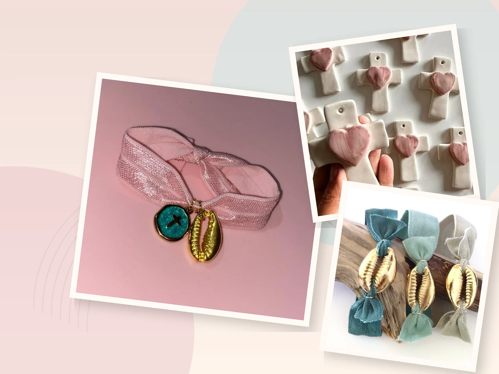

01
Lazo claro
US$2Pulseras de listón con medallita de cruz
Una misma idea en varios colores: listón suave y una cruz pequeña al centro de la caída.
FIJATE ENEL NUDO Y LA MEDALLA
LUZ CELESTIA · ACCESORIOS DE INSPIRACIÓN CATÓLICA
Un listón anudado. Una cruz pequeña. Un corazón que se siente al tocarlo. Conocé seis accesorios para llevar cerquita o regalar con intención.

Descubrí la cruz pequeña, el corazón en relieve y los bordes dorados. A veces el detalle más pequeño es el que más recordamos.
01 / colección
Seis accesorios y seis maneras de expresar algo personal. Tocá cualquier fotografía para ver sus detalles reales de cerca.
Pulseras de listón con medallita de cruz
Una misma idea en varios colores: listón suave y una cruz pequeña al centro de la caída.
Cruces blancas con borde dorado
La silueta es limpia; el borde dorado y la cruz pequeña le dan firmeza.
Cruces claras con corazón rosado en relieve
El corazón se levanta de la superficie y cambia por completo la lectura de la cruz.
Pulseras de listón con concha dorada
La concha metálica toma la luz y contrasta con listones suaves en tonos fríos y neutros.
Pulsera rosada con medallita y concha
Una sola cinta sostiene dos acentos distintos: cruz turquesa y concha dorada.
Cruces claras con corazones de colores
La forma se repite, pero cambia el centro: azul, verde y rosado sobre la misma cruz clara.
02 / LOS DETALLES
La cruz tiene su propio significado. El color, el listón, las texturas y las formas hacen que cada pieza se sienta personal, para llevar o regalar.
Cruces que se reconocen al instante.
Listones y texturas para mirar de cerca.
Piezas con carácter, no copias idénticas.
03 / contacto directo
Si alguna pieza te gustó, escribinos por Instagram y contanos cuál. Así de sencillo.
Explorá la colección.
Abrí cualquier pieza y recordá su nombre.
Escribí por Instagram para consultar disponibilidad o preorden.
Las consultas y preórdenes se hacen por @luzcelestia.ni.